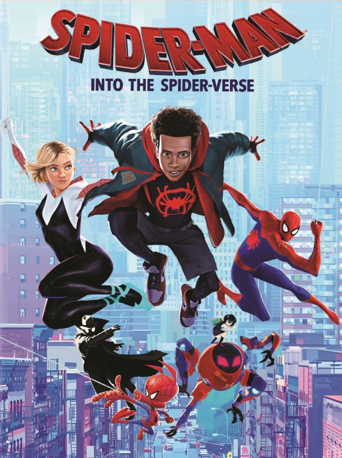
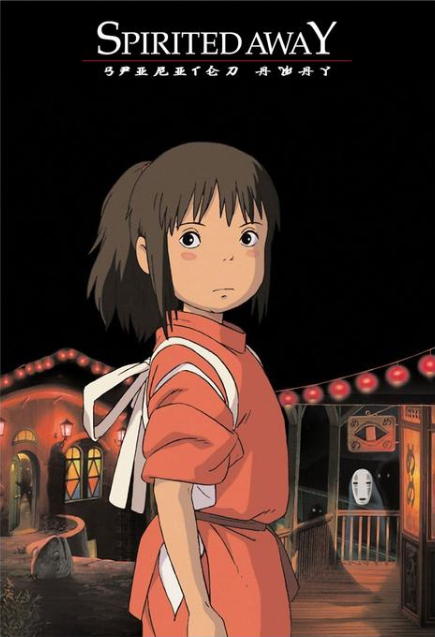

"Sophie (Emily Mortimer) has an uneventful life at her late father's hat shop, but all that changes when she befriends wizard Howl (Christian Bale), who lives in a magical flying castle. However, the evil Witch of Waste (Lauren Bacall) takes issue with their budding relationship and casts a spell on young Sophie, which ages her prematurely. Now Howl must use all his magical talents to battle the jealous hag and return Sophie to her former youth and beauty."
This movie is fantastic! Anime films can be very hit or miss, but Studio Ghibli never fails to deliver. Hayao Miyazaki invites us into another brilliantly crafted world and the studio's talented animators put a very noticeable amount of care into bringing the world alive with vibrant colors and animation that you would never expect from an anime film from 2004!
Give this one a watch for sure. Studio Ghibli films are consistently quality.

My other favorite movies!
 Howl's Moving Castle ©2004 Studio Ghibli, All Rights Reserved.